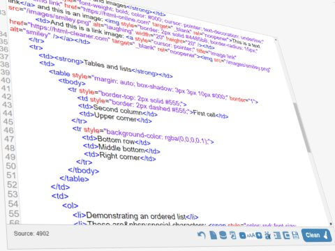

Post #1
Não clique aqui Não acredite em algo simplesmente porque ouviu. Não acredite em algo simplesmente porque todos falam a respeito. Não acredite em algo simplesmente porque está escrito em seus livros religiosos. Não acredite em algo só porque seus professores e mestres dizem que é verdade. Não acredite em tradições só porque foram passadas de geração em geração. Mas, depois de muita análise e observação, se você vê que algo concorda com a razão e que conduz ao bem e benefício de todos, aceite-o e viva-o. Diego Loiola